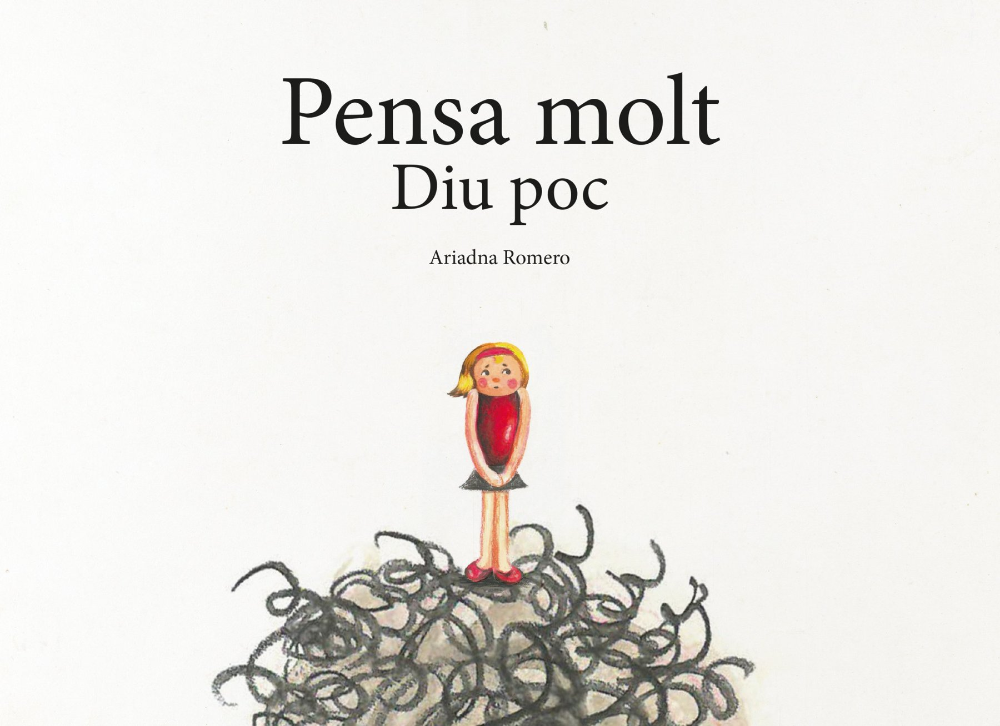
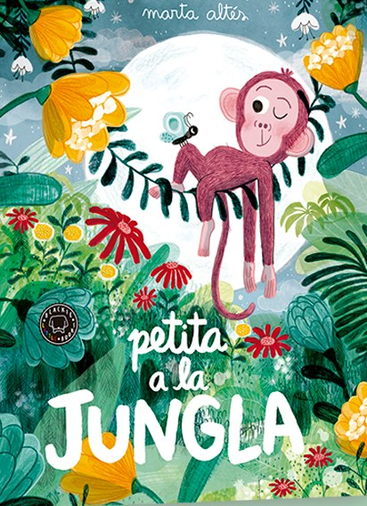
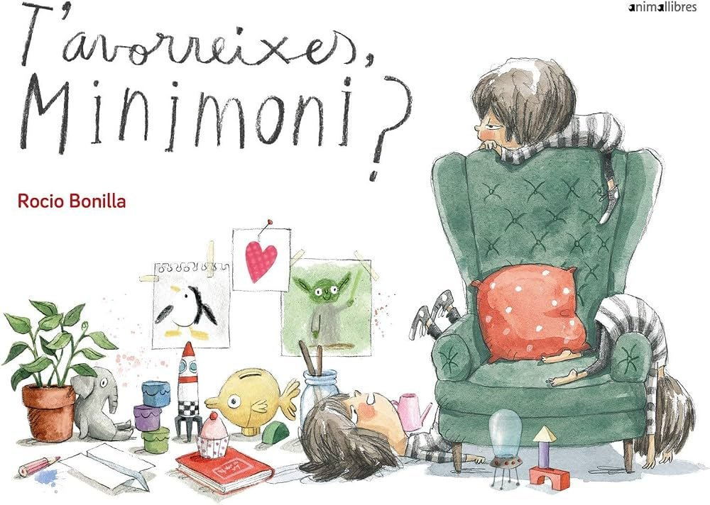
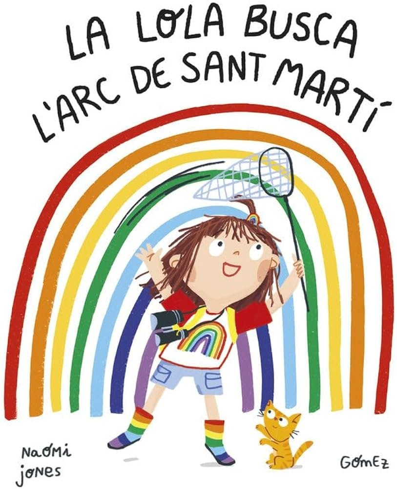
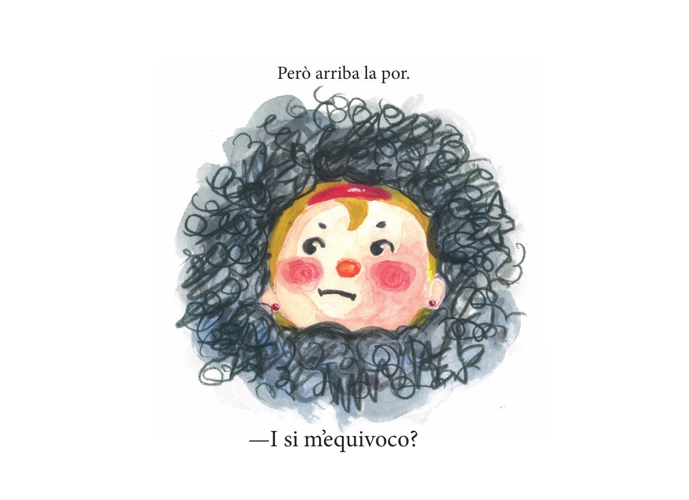
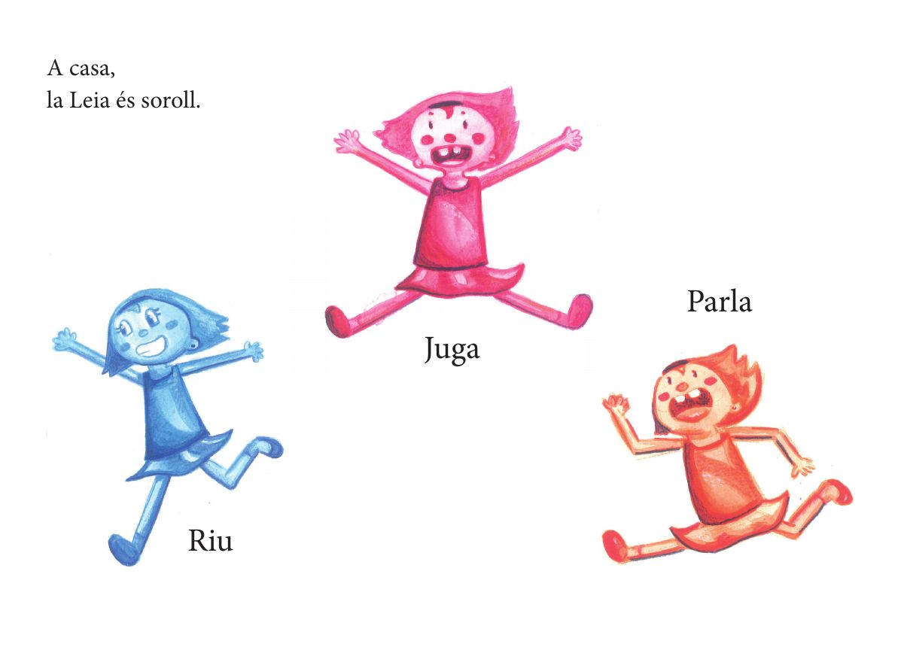
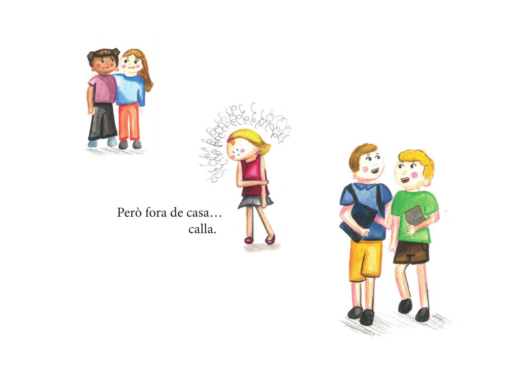

Text i imatge
Les il·lustracions no són decoració: expliquen aspectes que el text no diu i aporten informació necessària per entendre la història. El lector interpreta tots dos llenguatges alhora, fa hipòtesis i completa el que no apareix escrit.

Treball de recerca · 2n de Batxillerat
Com interactuen el text i la imatge en els àlbums il·lustrats per facilitar als infants la comprensió d'emocions com la timidesa?
«Pensa molt, diu poc» és un àlbum il·lustrat sobre la timidesa, creat com a treball de recerca de 2n de Batxillerat. La Leia té moltes coses a dir, però la por d'equivocar-se fa que li costi expressar-les. A casa és soroll; a fora, silenci.
El treball estudia com interactuen el text i la imatge en els àlbums il·lustrats per facilitar als infants la comprensió d'emocions com la timidesa. He investigat sobre els àlbums il·lustrats i la lectura visual, he entrevistat tres mestres d'educació infantil i una bibliotecària, he analitzat diversos àlbums i, finalment, he creat el meu propi, il·lustrat a mà amb aquarel·les i llapis de colors.
Llegeix el marc teòric →«Pensa molt, diu poc» (Piensa mucho, dice poco) es un álbum ilustrado sobre la timidez, creado como trabajo de investigación de 2.º de Bachillerato. Leia tiene muchas cosas que decir, pero el miedo a equivocarse hace que le cueste expresarlas. En casa es ruido; fuera, silencio.
El trabajo estudia cómo interactúan el texto y la imagen en los álbumes ilustrados para facilitar a los niños la comprensión de emociones como la timidez. He investigado sobre los álbumes ilustrados y la lectura visual, he entrevistado a tres maestras de educación infantil y a una bibliotecaria, he analizado varios álbumes y, finalmente, he creado el mío, ilustrado a mano con acuarelas y lápices de colores.
Leer el marco teórico (en catalán) →Pensa molt, diu poc (“Thinks a lot, says little”) is a picture book about shyness, created as a final-year research project in upper secondary school (Batxillerat). Leia has so much to say, but the fear of getting it wrong keeps her quiet. At home she is noise; outside, silence.
The project looks at how text and image work together in picture books to help children understand emotions such as shyness. I researched picture books and visual literacy, interviewed three early-years teachers and a librarian, analysed several picture books and, finally, created my own, hand-illustrated in watercolour and coloured pencil.
Read the theoretical framework (in Catalan) →La recerca
Els àlbums il·lustrats són llibres en què el text i la imatge treballen conjuntament per explicar una història. El significat no es construeix només amb les paraules, sinó també amb les il·lustracions.
Aquest treball se centra en la timidesa, una experiència habitual durant la infància que de vegades costa d'expressar amb paraules. L'objectiu principal és crear un àlbum il·lustrat propi que ofereixi als infants un personatge amb qui identificar-se.
Articles, pàgines web i altres fonts sobre àlbums il·lustrats, lectura visual i desenvolupament emocional.
Tres mestres d'educació infantil i una bibliotecària, sobre com s'utilitzen els àlbums a l'aula i a la biblioteca.
Anàlisi de diversos àlbums i creació d'un àlbum propi aplicant el que s'ha après.
Marc teòric
Les il·lustracions no són decoració: expliquen aspectes que el text no diu i aporten informació necessària per entendre la història. El lector interpreta tots dos llenguatges alhora, fa hipòtesis i completa el que no apareix escrit.
És la capacitat d'interpretar imatges, colors, formes i composicions. Permet que els infants segueixin una història i entenguin les emocions dels personatges abans de saber llegir, i afavoreix el llenguatge, la creativitat i el pensament crític.
Molts àlbums tracten la por, la tristesa, la ràbia, la vergonya o la timidesa. Les expressions, els colors i els escenaris fan visible com se sent un personatge, i el llibre obre converses a l'escola i a casa.
Es manifesta com una sensació d'incomoditat o inseguretat davant d'altres persones, sobretot en situacions noves. No implica necessàriament una dificultat. Per acompanyar un infant tímid cal no forçar-lo ni etiquetar-lo, i oferir-li oportunitats progressives.
Memòria completa del treball, per si algú hi està interessat i la vol llegir sencera.
Llegeix la memòria →Resultats de la recerca
Les mestres utilitzen els àlbums amb freqüència, sovint dins de rutines com l'hora del conte o la lectura dialògica. Destaquen que afavoreixen el llenguatge, la comprensió lectora, la imaginació i el pensament crític, i que les imatges són un suport clau per als infants que encara no llegeixen.
També els fan servir per treballar conflictes i emocions a l'aula. La bibliotecària hi afegeix un matís: els àlbums no s'haurien de reduir al treball de valors, perquè tenen una riquesa literària i visual pròpia.
«Els àlbums no tenen edat, són per qui els troba.»Mestra 1
Utilitza àlbums il·lustrats a l'aula? Amb quina freqüència?
Mestra 1. Sí. Un cop a la setmana a la franja horària de «L'hora del conte» i després, cada dia busquem una estoneta ja sigui després del pati, abans de marxar… per acabar un conte, fer preguntes, o continuar amb històries curtes…
Mestra 2. Sí, sempre que puc.
Mestra 3. Sí, gairebé cada dia en faig servir. Escullo un i en una setmana l'explico tres vegades. A l'escola fem lectura dialògica, és una metodologia educativa basada en el diàleg i la participació activa dels infants durant la lectura. No es tracta només de llegir un conte, sinó de parlar sobre el que es llegeix, compartir idees i construir significat entre tots. En la primera lectura llegeixo mentre veuen les imatges, ens fixem en la tapa, parlem de què creiem que anirà el conte, mirem com es diu l'autor/a i l'il·lustrador/a, i en acabar comentem de què ha anat, si els ha agradat… En les altres dues lectures els infants tenen una participació més activa amb preguntes, opinions o interpretacions. D'aquesta manera hi ha una millor comprensió, ho relacionen amb experiències personals i entre tots construïm el significat del text. A part, també n'explico per treballar els conflictes que han sortit durant la setmana. Busco molts àlbums que parlin de les emocions ja que a infantil els ajuda a posar paraules als seus sentiments. A més, també en faig servir per introduir continguts que es tractaran a l'aula durant aquells dies com per exemple per treballar les estacions.
Quins aprenentatges o competències observa que es desenvolupen?
Mestra 1. Primer de tot destacar l'atenció, després infinitat d'aprenentatges o mecanismes que s'activen mentre l'expliquem: la concentració, la connexió entre el conte i les experiències prèvies dels infants, la motivació, despertar la imaginació, la lectura d'imatges, «ensenyar a mirar» més enllà, fer deduccions a través de les imatges o el context, expressar valoracions i opinions, respectar el torn de paraula, observar les tècniques que utilitzen els àlbums: ja sigui collage, aquarel·la… els colors utilitzats…
Mestra 2. La comprensió lectora, la deducció, formulació d'hipòtesis, resumir…
Mestra 3. Els àlbums ens ajuden a introduir i consolidar molts aprenentatges. És un recurs molt potent. Per una banda ens ajuden a treballar tota la part del llenguatge: vocabulari, comprensió oral, estructura de frases, frases fetes… També ens ajuden a iniciar la comprensió lectora, el pensament crític (ja que opinem sobre allò que hem vist o llegit), l'educació emocional, els valors… L'observació de la il·lustració no només com a decoració sinó com una imatge que ens explica coses, que ens fa pensar… Potencia la nostra creativitat i imaginació.
Com interactuen el text i la imatge en el procés de comprensió?
Mestra 1. Un va lligat de la mà de l'altre. Mentre expliquem amb paraules l'àlbum, ha d'anar acompanyat amb la imatge per assegurar la seva comprensió. O per aquells alumnes que més els hi costa, oferir aquestes imatges per tal de reforçar la comprensió de l'àlbum o història.
Mestra 2. Les imatges ajuden a la comprensió del text i actuen com a mesura universal de suport.
Mestra 3. Quan explico un àlbum els infants d'infantil s'estan fixant en la imatge i jo els ajudo a entendre-la llegint el text ja que, ells encara no saben llegir. Una vegada coneixen la història, el llibre sovint queda al seu abast i ells el miren i el tornen a mirar observant les imatges que els expliquen la història. El text els ajuda a posar paraules a allò que estan veient i la imatge els ajuda a acabar d'entendre allò que han escoltat.
Quin paper tenen en la relació dels infants amb la lectura?
Mestra 1. Doncs quan estan escoltant un conte, la mestra fa de modelatge en tots els sentits, i dona l'oportunitat d'adquirir així nou vocabulari, lèxic, estructures gramaticals, entonacions, fa diàlegs, tonalitats… un seguit d'habilitats que potenciaran la lectura en l'infant.
Mestra 2. És el primer contacte per arribar al gust per la lectura.
Mestra 3. Els infants que han tingut contacte amb molts àlbums il·lustrats acostumen a mostrar més interès per la lectura, una millor comprensió dels textos i un ús més ric del vocabulari. Amb el temps, aquests moments compartits de lectura, tant a l'escola com a casa amb la família, escoltant i comentant els àlbums, contribueixen a crear l'hàbit lector i a fomentar el gust per la lectura.
Ha utilitzat algun àlbum per treballar valors o educació emocional?
Mestra 1. Sí, molts. De fet, utilitzem els àlbums per introduir un tema, un concepte, una idea, una conversa, un cercle restauratiu… Com a exemple: El punt, El monstre de colors, El banc blau, Ens tractem bé, L'Elmer, El peix irisat, Lili, El fil invisible… Vam fer un cercle restauratiu amb el conte Ens tractem bé ja que va sorgir un conflicte a l'aula i era el moment de tractar-lo. A través de l'àlbum, vam fer les diverses activitats, moltes converses, van donar les seves opinions, es van expressar, i van poder dir cadascú la seva. Vam fer acords: en diem paraules boniques, ens regalem dibuixos i missatges positius, ens parlem bé… A partir d'aquí vam fer una altra activitat que va ser un sociograma amb animals.
Mestra 2. Les bruixes d'Arlet. Mostra que no totes les bruixes són dolentes i ajuda a construir nous coneixements.
Mestra 3. Sí, com he comentat abans, els faig servir sovint. A l'aula fem cercles restauratius on l'activitat principal és l'explicació d'un àlbum relacionat amb les emocions que ens dóna peu a posar paraules al que passa a l'aula. Aquest curs hem explicat l'àlbum Ens tractem bé, Lili, Neda que neda… A I5 sempre treballem també El monstre de colors, ajuda molt als infants a posar paraules als seus sentiments. Un altre que m'ha funcionat molt bé és Tinc un volcà, els ajuda a entendre perquè a vegades s'enfaden i ajuda a tenir recursos davant de situacions que els fan enfadar.
Recorda algun àlbum que hagi tingut un impacte especial?
Mestra 1. Sí, la veritat que molt d'ells. Lo bonic de la diversitat, és que cada infant s'enganxa amb un conte o altre. Així que cal oferir diversitat de temes, tècniques, històries, per tal que cadascú trobi o descobreixi allò que li agrada i es senti còmode. Podria destacar El peix irisat, ja que els hi crida molt l'atenció per l'escata brillant. A simple vista, la història en sí, sembla senzilla i superficial, però va més enllà. Per exemple, vam parlar que no està bé deixar sol a un peix per ser com és, o «arrencar-li» una escata per tal que pugui tenir amics…
Mestra 2. Tots aporten alguna cosa.
Mestra 3. Els que he anomenat fins ara. Aquest curs els ha encantat un que es diu Deixa'm en pau! Ens ha ajudat a millorar la relació entre un grupet d'amigues de la classe. El fil invisible també els ajuda en la familiarització a l'escola.
Recomanaria l'ús dels àlbums il·lustrats a totes les escoles?
Mestra 1. Sí, els recomanaria. A més per totes les edats, no només per infantil. Els àlbums no tenen edat, són per qui els troba. Els recomanaria pel ventall de possibilitats que desperten als infants: artístiques, narratives, lingüístiques, imaginatives, de coneixements…
Mestra 2. S'han de fer servir per establir les bases d'una bona competència lectora.
Mestra 3. Sí, per mi és una eina molt útil. Cal potenciar-los també a primària. A infantil en general es fan servir molt però crec que s'haurien d'utilitzar en tots els nivells.
Trajectòria professional i vinculació amb la literatura infantil i juvenilJo vaig estudiar biblioteconomia i documentació, amb la idea de treballar en una biblioteca pública. Quan vaig començar la carrera, jo paral·lelament estava en el món del lleure infantil, feia de cap, i ja tenia relació amb els infants. Vaig anar descobrint la narració oral, i m'interessava cada vegada més el món dels contes. Per això, quan a la carrera vam començar a fer treballs, etc. vaig anar interessant-me en tot el que tenia a veure amb lectura i infància. I d'aquí que vaig anar-me especialitzant en aquest camp. Es podria dir que vaig descobrir la LIJ d'adolescent.
Relació amb els àlbums il·lustrats a la bibliotecaEls àlbums són una part molt important del fons de la biblioteca i per les seves característiques són aptes per tot tipus de públic, no només l'infantil. Això fa que el recomanem molt. A la biblioteca tenim un projecte que es diu laboratoris de lectura i es basa sobretot en la promoció dels àlbums. Et passo un enllaç del blog: Brulab.art
Què fa que un àlbum sigui especialment recomanable per a infants?Allò que fa especial un àlbum és que es tracta d'un suport on s'expliquen obres amb llenguatge textual, però també visual i també material, físic. Què vol dir això? Que els infants tarden uns anys a dominar el llenguatge textual, a aprendre a llegir, però des de ben petits, ja poden aprendre a llegir imatges. Amb els àlbums és ideal aquesta lectura compartida, adult acompanyant i infant. I tots dos van sumant experiències lectores fins a comprendre la història.
Paper dels àlbums en la formació de l'hàbit lectorAra mateix, que els nostres infants són d'una generació molt visual, és un element clau envoltar la infància d'àlbums. Es fan edicions molt enginyoses, riques, interessants, diverses i divertides. I és una entrada al món de l'art, bàsica per a l'educació visual. I és una entrada al món literari.
Contribueixen al llenguatge, la comprensió, l'expressió oral o la creativitat?La gràcia de l'àlbum és que en un llibre de deu pàgines, pots trobar tota la riquesa i competència literària d'una novel·la de 200 pàgines. No vol dir que sigui idèntic o que una cosa hagi de substituir la resta. Però hi ha àlbums que juguen amb el punt de vista, que tenen un fals narrador, que juguen amb el pas del temps, que utilitzen diferents tècniques artístiques segons aspectes literaris que vol destacar el text… és a dir, que des dels 0 anys, tu ja estàs començant l'itinerari lector dels infants. Quan ells neixen, no tenen un gust estètic adquirit, tot això ho adquireixen a partir de les imatges que veuran, al món, a la tele, la publicitat, la roba, etc. però també és una manera d'educar-los en la diferència, en veure un banc d'imatges ric, sense estereotips. Des de l'inici de l'itinerari lector, quan tu tries els llibres, estàs ajudant a l'infant a adquirir: esperit crític, educació visual, consciència poètica, gust estètic, interès per l'experimentació…
Ha utilitzat àlbums per treballar valors o emocions?Jo no sóc massa partidària en utilitzar els àlbums per «treballar valors», perquè la lectura i la literatura, ja són prou importants, com hem vist fins ara, per si soles, perquè ajuden a adquirir llenguatge (i això és bàsic per poder pensar) i ajuden a veure el món des de diferents mirades, i això és bàsic per la democràcia. Indirectament tots els llibres tenen uns valors, però crec que el més important és que literàriament siguin bons, els personatges ben dibuixats, interessants, que permetin sentir-se reflectit i també siguin una porta a la fantasia (mirall i finestra, que deia Jella Lepman). Si aquesta pregunta la fas a algú que ha llegit una novel·la, sembla ridícula, cap adult tria un llibre per llegir segons si treballa les emocions… Però jo sí que utilitzo llibres que podries treure'n molts aprenentatges, si et refereixes a això: autors com Arnold Lobel, Leo Lionni, Gianni Rodari, Beatrice Alemagna…
Algun àlbum amb un impacte especial?M'agrada molt explicar aquests tres àlbums: Neda que neda, de Leo Lionni; El petit globus vermell, de Iela Mari; i Afortunadament, de Remi Charlip.
Anàlisi d'exemples

De Marta Altés. Text senzill i imatges que aporten informació que no apareix escrita. Mostra com una història aparentment simple pot transmetre emocions a través de la relació entre text i imatge.

De Rocio Bonilla (Animallibres). M'han inspirat especialment les seves il·lustracions: l'aquarel·la, el traç de llapis que es deixa veure i l'expressivitat dels personatges, molt propers a les tècniques que he fet servir a «Pensa molt, diu poc».

Text de Naomi Jones i il·lustracions de Gómez (NubeOcho). M'han inspirat les seves il·lustracions, l'ús del fons blanc i la manera de distribuir els elements a la pàgina, que deixa respirar els personatges i fa que l'atenció vagi directament a ells.
La part pràctica
La Leia és una nena que té molts pensaments però que sovint no aconsegueix expressar-los amb paraules. La por d'equivocar-se o de ser jutjada fa que li costi parlar: «I si m'equivoco?»
A casa riu, juga i parla. Fora de casa es queda en silenci, i a l'escola se sent sola. Aquest contrast entre els dos espais és un dels recursos narratius principals de l'àlbum.
El text és breu. Frases com «Però fora de casa… calla» o «se sent sola» es reforcen amb la manera com es dibuixa la Leia en cada lloc.



Il·lustrat a mà amb aquarel·les i llapis de colors. Passa les pàgines amb les fletxes, el teclat o lliscant el dit.
Coberta
Procés creatiu
1 · La idea
La timidesa és un tema que m'ha acompanyat des de la infància. Això em va ajudar a imaginar com se sentia la Leia i quines situacions volia representar.
2 · El personatge
Vaig fer moltes proves d'estil i vaig modificar l'aspecte de la Leia fins a aconseguir una imatge coherent. La dificultat principal va ser dibuixar-la des de diferents angles i en diverses posicions.
3 · L'estructura
Abans de les il·lustracions definitives vaig fer una maqueta per organitzar les escenes i imaginar com quedaria cada pàgina.
4 · Les il·lustracions
Il·lustracions fetes a mà, principalment amb aquarel·les i llapis de colors. També vaig treballar el gargot que representa els pensaments de la Leia.
5 · El muntatge
Vaig escanejar les il·lustracions, hi vaig fer les últimes correccions a l'ordinador, vaig afegir el text i vaig provar diferents maquetacions fins al muntatge definitiu.
Conclusions
De vegades, una sola paraula ja és molt.
El text i la imatge interactuen de manera complementària. El text guia l'acció, i la imatge amplia aquesta informació, mostra el que no es diu i fa visible l'estat emocional dels personatges.
A «Pensa molt, diu poc» la Leia parla molt poc, però les il·lustracions deixen veure el que passa dins seu: el gargot, el contrast entre casa i escola i la manera com es dibuixa. La part visual no és un complement del relat, sinó una part essencial de la narració.
El final és intencionadament senzill. La Leia no deixa de ser tímida de cop: aconsegueix dir «Jo». Encara que només sigui una paraula, per a ella és un inici.
Com a millora, m'hauria agradat tenir més temps per practicar la il·lustració dels personatges i revisar alguns detalls. També seria interessant veure com reaccionen diferents infants davant de l'àlbum.
Referències